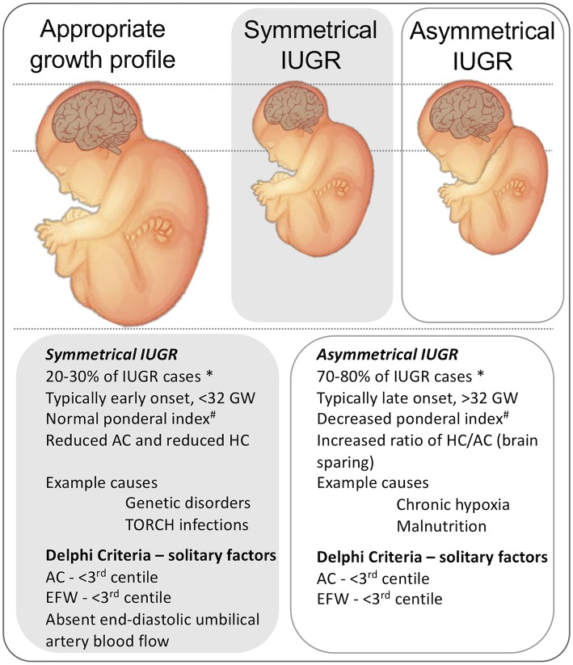

Página 6 · Sofrimento fetal crônico
Classificação: simétrico, assimétrico e o tipo 3
O mito de que a classificação morreu
O mito de que a classificação morreu. Muitos livros já não trazem mais a divisão simétrico × assimétrico, e é comum ouvir que ela caiu em desuso. Só que ela ainda aparece em prova — por isso continua valendo saber. Ignorá-la porque “saiu do livro” é o caminho para errar a questão que lista “tipo 1, 2 e 3”.
Simétrico (tipo 1) — cedo, e não é a placenta
Simétrico (tipo 1) — cedo, e não é a placenta. A restrição simétrica (tipo 1) é o feto todo proporcionalmente pequeno; a alteração ocorreu no início da gravidez (primeira metade — primeiro/segundo trimestre). E aqui está a pegadinha: a simétrica não é insuficiência placentária — o feto é pequeno demais, cedo demais, para culpar a placenta. As causas são fetais: malformação, infecção (toxoplasmose, sífilis, rubéola, citomegalovírus, parvovírus), cromossomopatia ou uso de medicação materna. Por isso, diante do simétrico, a investigação se dirige a infecção, malformação e medicação — rastreamento do que se manifesta cedo.
Interativo: clique numa semana para ver o tipo esperado.
O tempo em que a restrição aparece conta a causa: tipo 1 (simétrico) na 1ª metade (fetal); tipo 2 (assimétrico) na 2ª metade (placentário, 80%; precoce < 32 / tardio > 32); tipo 3 misto no início. O corte 32 aqui é de classificação.Assimétrico (tipo 2) — tardio, placentário, o clássico
Assimétrico (tipo 2) — tardio, placentário, o clássico. A restrição assimétrica (tipo 2) é a alteração mais tardia (segunda metade, final do segundo e terceiro trimestre), ligada à insuficiência placentária; é a clássica e responde por 80% dos casos. É a cabeça poupada com o abdome pequeno da página anterior. Diante do assimétrico (placentário), a conduta é o Doppler.
Precoce abaixo de 32 × tardio acima de 32
Precoce < 32 × tardio > 32. O assimétrico se subdivide por 32 semanas: precoce (< 32 semanas), mais grave, de pior prognóstico; e tardio (> 32 semanas), de prognóstico melhor.
O tipo 3 misto
O tipo 3 misto. Existe ainda um tipo 3 (misto / assimétrico precoce), o mais raro — basta saber que existe, para não cair numa questão que lista “tipo 1, 2 e 3”. Ele tem assimetria, mas se manifesta no início, e algumas cromossomopatias podem fazê-lo. Há quem considere a classificação datada — mas o critério, embora antigo, ainda é cobrado, e por isso não se corta.

No painel simétrico/proporcional, o feto inteiro é pequeno (agressão precoce: aneuploidia, infecção). No assimétrico/cabeça poupada, a cabeça preserva-se e o abdome encolhe — insuficiência placentária, hipóxia crônica.
Fleiss B et al. Frontiers in Endocrinology 2019 · DOI 10.3389/fendo.2019.00188 · fonte / licença: CC BY
Cada tipo, sua conduta
Cada tipo, sua conduta. Fixe a lógica: simétrico → rastreia infecção e avalia malformação; assimétrico → Doppler. O tempo em que a restrição apareceu conta a causa, e a causa conta a conduta.
| Tipo | Quando | Causa | Conduta |
|---|---|---|---|
| 1 · simétrico | 1ª metade | fetal (infecção / malformação / cromossomo / medicação) | rastreia infecção e malformação |
| 2 · assimétrico | 2ª metade (precoce < 32 / tardio > 32) | placentária (80%) | Doppler |
| 3 · misto | início | cromossomo (raro) | saber que existe |
Quiz — fixação
Feto proporcionalmente pequeno, com alteração já detectada no primeiro trimestre. Qual a classificação e a investigação dirigida?
- Gabarito A. Pequeno proporcional + início precoce = simétrico/tipo 1, de causa fetal.
- B o assimétrico é tardio e placentário — o erro é mandar ao Doppler quando a causa é fetal (infecção/cromossomo).
- C há alteração precoce e proporcional; não é a variação sadia do PIG.
- D o tipo 3 é raro e não é “expectante sempre” — a descrição bate com o tipo 1 clássico.
Sobre o assimétrico (tipo 2), assinale a correta.
- Gabarito B. É o clássico (~80%), placentário, com corte de 32 semanas.
- A inverte a frequência (é 80%, não 20%) e a causa (placentária, não fetal).
- C o assimétrico é da segunda metade — a 1ª metade é o simétrico.
- D justamente o assimétrico placentário é o que anda com pré-eclâmpsia (raiz compartilhada).